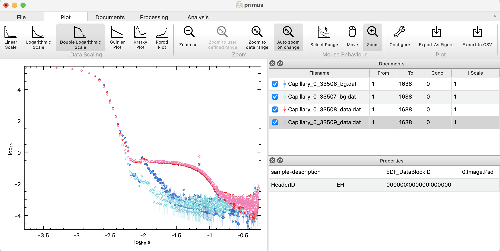

Home
Tutorial: Data Reduction with Primus
Contributors: Jeppe Breum Jacobsen, Al Kikhney, Andreas Haahr Larsen

Sample (blue) and buffer (green) prior to subtraction.
Before you start
This tutorial relies on the program Primus, which can be downloaded from BioSAXS.com as a part of ATSAS.
Learning Outcomes
After completing this tutorial, you will be able to perform primary data reduction with Primus, including:- Identifying and removing outliers.
- Merging data files to obtain an average.
- Performing background subtraction.
Introductory remarks
In a scattering experiment, the sample of interest are often dispersed in a solvent and contained in a sample holder (e.g. a cuvette). The scattering comes from all these components. To retrive the scattering from the particle of interest alone, the background scattering is measured and subtracted: $$ I_\text{particle}(q) = I_\text{particle+background}(q) - I_\text{background}(q) $$ Background subtraction, along with quality check of the data, are important steps before the data can be used to refine structural parameters.
Part I: Identifying outliers and merge files
In a SAS experiment, it is preferable to perform multiple measurements (frames) of the same sample with short exposure times rather than a single prolonged measurement.
Thereby changes in the sample sample can be detected and the problematic frames removed. Changes may be caused, e.g., by air bubbles, malfunctioning temperature control, or beam damage.
Sometimes the outliers are not obviously detected, and it is necessary to use statistical methods to identify them.
Download this zip-file containing a series of data files (frames).
If ATSAS is installed, you should have a program titled "SAS Data Analysis" or "Primus" installed. Run the program and click on the "Open" button and select the 20 sample files that start with "img_0223_" (the buffer files starts with either "img_0222_" or "img_0224_" - ignore these in this step).
After loading the data, you should see a window like the one above. The data are plotted in the left window, and the right window display the data files in a table format, where each data file can be selected/deselected.
To get log-log plot, click on the "Plot" section and select "Double Logarithmic Scale".
Try to identify the outliers by visual inspection. It will probably not be easy.
To identify the outliers, click the "Processing" section, and then the "Compare" button.
This will open a new window like the one below.

On the right side of the window, you can see how every data file compares to every other datafile. The rows and columns correspond to the data files (hence the diagonal line is just white, since you are comparing a data file to itself).
A green box indicates that the two data files are similar, while a red box indicates that they are different. By clicking a red or green box, you can see the two data files plotted against each other,
as well as their residuals.
The table at the bottom shows how the two data files compare in three statistical tests. They are determined to be "different" (red) if the p-value in two of the tests are below a certain threshold.
Determine which data files are outliers and exclude them from the data set in the main window by "unchecking" them. (Hint).
After identifying and deselecting the outliers, go to the "Processing" section and click "Merge". This creates a new file called "merge_001.dat".
Primus automatically takes care of error propagation. When you have generated the averaged data, go to "file" and click "close all".
Part II: Background subtraction
The zip-file from Part I contains two series of buffer measurements (files starting with "img_0222_" and "img_0224_"), measure before and after the sample measurement.
Load these files (both sets of buffer measurements) into Primus and remove the outliers (if there are any?) as described in Part I. Next, merge them just like before.
Now you can go to "file" and "close all". The merged file is saved in the data folder.
To subtract the buffer from the sample, load the two merged files "merge_001.dat" and "merge_002.dat" into Primus. Make sure that the sample average file is above the buffer file in the list of loaded files (else, you can right click and press Move Up).
Next, in the "Processing" section click "Subtract" (do not normalize by concentration if opted for). This creates a new file called "sub_001.dat". This file contains the background-subtracted data.
-
Inspecting the subtracted data
- Deselect averaged data and buffer files, and select only the "sub_001.dat" file.
- Navigate to the "Plot" section and select "Absolute scale" if it's not already selected.
- Zoom in on the region with close to zero intensity. The data points should not systematically be below 0 intensity.
- If you accidentally subtracted the sample from the buffer, it should also be apparent here.
Part III: Reducing data with instrumental artifacts
Download this SAXS data form silver nanoparticles. Data files are labeled as data and buffer files are labeled as bg. Open the sample files as before and ensure that y-axis is logarithmic under Plot > (Double) Logarithmic Scale.You can visually see that the data are not identical, so the two datasets should not be merged. Now, load in the two background measurements, which are also non-identical.

Notice, that some features that are the same in sample and background, e.g., the increased intensity at low values of $q$, as well as the "peak" at -2 on the q-axis, which is evident in the background labelled 33506_bg. These features are therefore not from the particles of interest, and should be removed by background subtraction.
In this case, it is advisable to continue only with 33508_data for the sample and 33507_bg for the buffer. Deselect the other two datasets, and subtract. As the first points are not structural features from the particle of interest, but rather affected by the beam stop, they should be removed. Increase the number in the "From" column of the subtracted data. It is easiest to determine how many points to remove in a double-logarithmic plot. As a rule of thumb, you should rather remove too many than too few points, as these points may lead to problems in later structural analysis.
Also, remove some of the points and high values of $q$, where buffer and sample are identical (e.g. From 24 To 900). Right-click on the truncated and subtracted data and press Save As. Open this data to check that it is as expected.
The data has an outlier (at intermediate $q$, around -1.1 on the q-axis). Manually, determine which point this is (e.g. by changing the "From" column). Remove this outlier from the data file, e.g. by opening it in a text editor and deleting the line. Reopen the file in PRIMUS to ensure that the outlier was successfully removed.
Congratulations! You now have a dataset that is ready for further analysis.
Challenges
- Challenge 1: Reduce these SAXS data of a lipid/protein nanodisc in buffer (multiple frames measured for sample and buffer).
- Challenge 2: Reduce these SAXS data of the soluble protein bovine serum albumin (BSA) in solution, measured at different concentrations. You may scale the subtracted data to see concentration effects (Processing > Scale).
Perspectives
- Background subtraction is not often not simple in practice, as it may not be evident what the buffer is. For silver nanoparticles in water, the background is simply water (measured in the same sample holder and at the same instrument at the same temperature etc.). However, if the interest is casein micelles in milk, it may be difficult to make a buffer, e.g milk without casein micelles, but with everything else being the same.
- In neutron scattering, there may be a large incoherent scattering contribution. Incoherent scattering is independent of q, so it adds a constant to the scattering intensity. The incoherent scattering may vary dramatically in the particle and solvent, so in SANS, an additional constant is often subtracted (or added), so compensate for this.
Feedback
Help us improve the tutorials by- Reporting issues and bugs via our GitHub page. This could be typos, dead links etc., but also insufficient information or unclear instructions.
- Suggesting new tutorials/additions/improvements in the SAStutorials forum.
- Posting or answering questions in the SAStutorials forum.